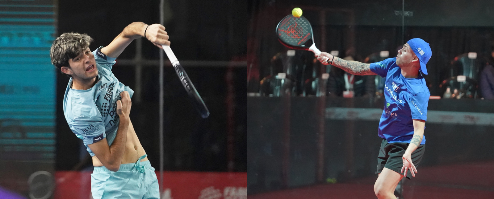
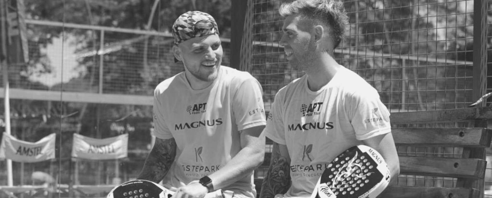

"Lo primero que hablamos es intentar ser Nº1": la ambición de Alfonso-De Pascual
25/09/2022

Las primeras palabras como nueva pareja APT de Juani de Pascual y Gonzalo Alfonso dejan claros cuáles son sus objetivos y expectativas. Los argentinos se unirán a partir del Torreón Open (6-13 noviembre, México) para intentar lograr buenos resultados, afianzar el Master Final 2022 para Juani y asentar las bases de una dupla que en el 2023 pelee por el Nº1.
Gonzalo Alfonso (revés, 30/03/96, General Cabrera, ARG)
"Después de Mar del Plata, Fede y yo coindicimos en separarnos y el primero que se me ocurrió fue Juani. Veo que tiene una proyección increible y no tiene techo. Siento que desde mi lado, a pesar de que tengo 26 años y tampoco soy un veterano, le puedo aportar la experiencia que hoy en día le falta. Es extremadamente completo pero no quita que tenemos que trabajar muy duro porque no hemos jugado nunca juntos, ni siquiera un set.
A partir de este lunes nos vamos a juntar y no nos vamos a separar hasta las etapas de México y vamos a trabajar muy duro y organizarnos porque el circuito está cada vez más competitivo.
Gracias a que él aceptó jugar conmigo, he vuelto a ilusionarme y motivarme y esa ilusión me ayuda a entrenar el doble. Me quiero juntar ya con él para organizarnos de las miles de maneras que podemos llegar a jugar y a afrontar el circuito.
Nos quedan únicamente dos etapas, en las cuales debemos luchar muchísimo para que Juani pueda entrar al Master Final y ojalá que así sea.
Lo principal de juntarnos ya este año es para que el año que viene, desde el primer torneo, parezca que llevamos jugando mucho tiempo juntos. Este año, aprovechar y utilizar el tiempo para adaptarnos porque creo que podemos ser una muy buena pareja.
A Juani le conozco y es muy profesional con la edad que tiene. Se maneja súper bien, intenta todo el tiempo mejorar y tiene oído. Más que nada es muy buen compañero y tira para adelante. Lo primero que hablamos los dos es que íbamos a intentar ser los Nº1, así que estoy muy motivado".
Juani de Pascual (drive, 9/12/04, Pergamino, ARG)
"Fue muy rápido pero a la vez no. Siempre nos habíamos tirado comentarios de la ilusión de cómo lo haríamos juntos. Y nada, se dio hace muy muy poco y estoy muy contento por este nuevo proyecto. Sé que tal vez tenemos condiciones para meter muy buenos resultados.
Gonza me parece un jugadorazo, siempre lo pensé y siempre lo voy a pensar. Estoy muy contento de que me haya elegido, son trenes que no puedo dejar pasar. Se dio la oportunidad de encarar esta última parte de la temporada juntos y en 2023 también. Los objetivos son claros: dar lo mejor de nosotros porque trabajo, dedicación y esfuerzo no van a faltar, por lo que tarde o temprano las cosas van a llegar solas.
Muy ilusionados y con muchas ganas de darlo todo y entrenar. Esta semana vamos a entrenar mucho juntos y vamos a darlo todo de nosotros para tener buenos resultados. Creo que podemos llegar a dar muchísima pelea en los torneos que vienen.
Gonza, en cuanto a experiencia y juego, me puede dar mucha ayuda, como ya hizo Maxi (Sánchez Blasco). Muy ansioso de afrontar este nuevo proyecto porque sé que se vienen cosas grandes y que podemos dar que hablar en los próximos torneos".
(Alfonso y De Pascual debutarán juntos en Torreón ya que Juani no podrá disputar el Master en Saltillo)
Chiostri y Alfonso hablan: motivos de la separación y próximos objetivos
21/09/2022

Después del Grand Master de Mar del Plata llegó una inesperada noticia: Chiostri y Alfonso, pareja 2 en ese momento, separaban sus caminos y próximamente confirmarán su nuevo compañero para el 2022.
Su presente temporada en absoluto es negativa, esas tres finales sin título son un balance que cualquier otra dupla firmaría... pero la ambición de los N°1 del 2021 no les permite conformarse con ello.
Tras lograr 6 títulos el año pasado y mantener el liderato en el ranking durante la mayoría del 2021 a pesar de las recurrentes lesiones fortuitas que sufrieron, Fede y Gonza rompen tras casi 4 años de unión.
¿Cuáles son las explicaciones de esta decisión en voz de los jugadores y cómo será su futuro? Aquí tienen las palabras de Gonza Alfonso y Fede Chiostri
G. Alfonso:"Priorizamos la amistad, la pasamos mal adentro de la cancha y nos afectaba fuera, somos muy amigos y nos queremos mucho. Los dos coincidimos en la decisión. Nos dimos cuenta con las redes sociales que somos una pareja muy querida, me animo a decir que la más querida y sentimos mucho orgullo con Fede por esa parte. Ahora busco un compañero que me devuelva las ganas de competir, de ser el mejor y esa motivación que no estaba teniendo, no por culpa de Fede si no de la situación. Alguien con proyección, súper profesional y con el que poder luchar por el N°1".
F. Chiostri: "La separación fue sin peleas ni nada, sólo el desgaste de casi 4 años jugando juntos. Sólo tengo palabras de agradecimiento para él. Conseguimos ser N°1 de APT y la verdad que hicimos cosas que nunca imaginé. Estoy súper contento y orgulloso, pero sí, claro que duele la separación porque nos habíamos acostumbrado a hacer todo juntos. Estoy contento y con ganas de afrontar mi nuevo compañero. Estoy muy ilusionado y espero que de aquí a final de año nos llegue ese título que se nos escapó con Gonza".